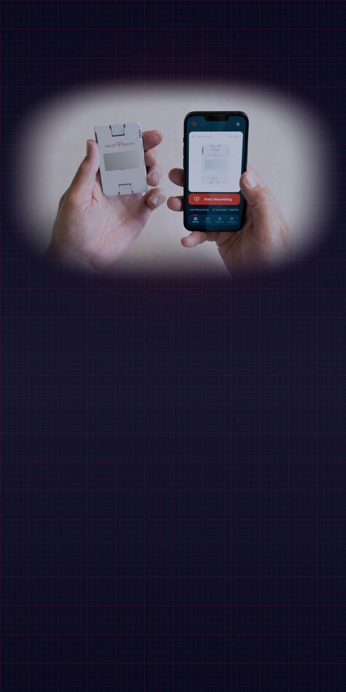
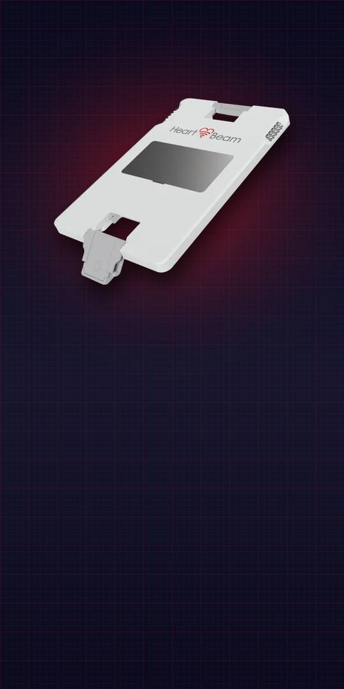
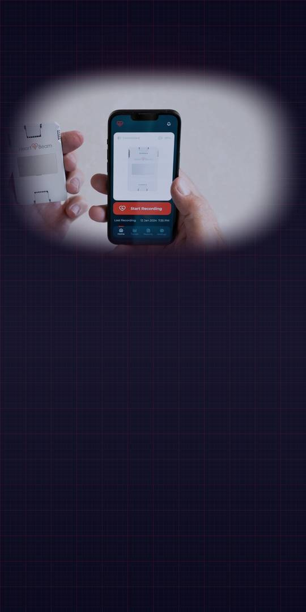

A credit-card-sized recorder, cleared for arrhythmia assessment only.

Press to the chest. The cloud synthesizes a 12-lead ECG “similar, but not identical” to a standard diagnostic one, and a physician reviews it.

The company expects ALIGN-ACS results at TCT (Oct 31–Nov 3) and HEADSTART-ACS results in 2027. Breakthrough designation (Oct 5) is not a clearance.
Net loss was $9.7M in the first half of 2026. The company’s 10-Q says existing liquidity is insufficient for the next twelve months.